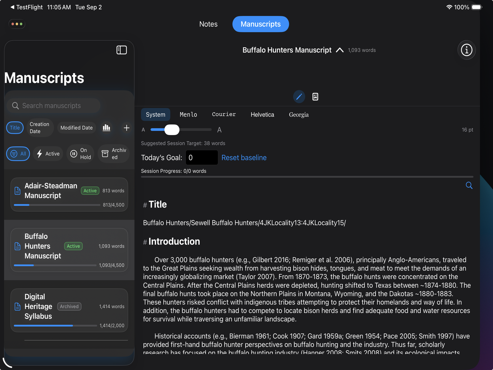
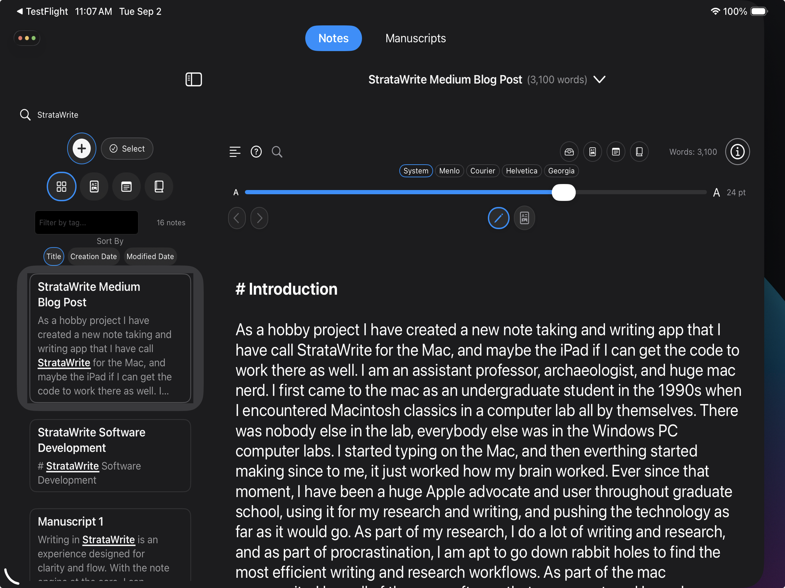
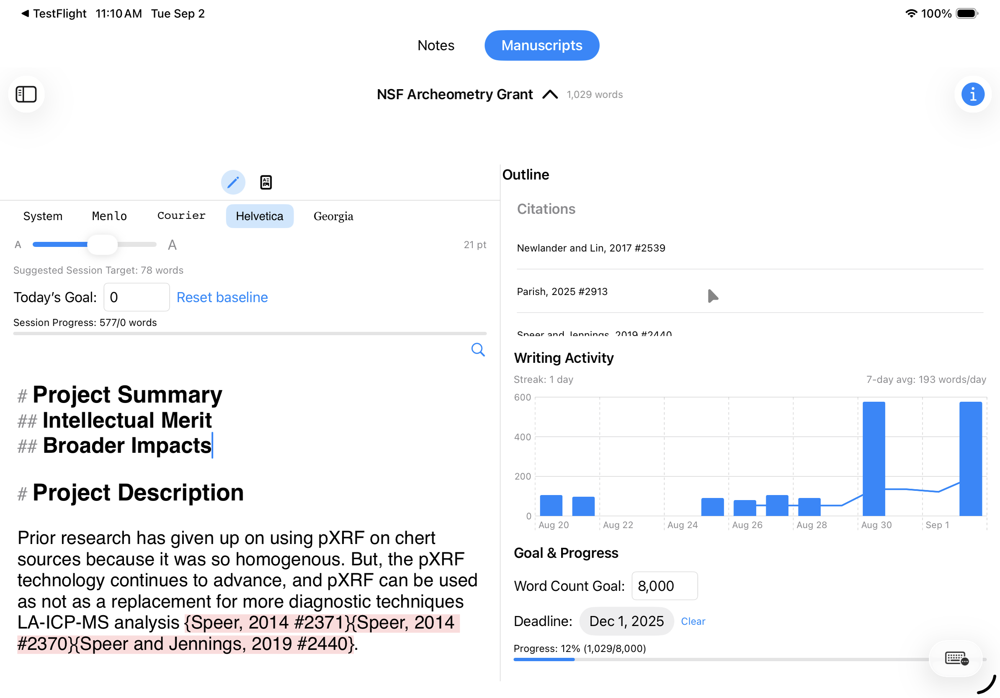

Structure-first thinking
Use links, tags, categories, and outlines to keep arguments from dissolving into a pile of fragments.
Mac and iPad research workflow
A native workspace for research notes and manuscripts, paired with StrataRead for close PDF reading and annotation. Built for scholars who move between evidence, structure, and prose all day.
 StrataWrite
StrataWrite
StrataWrite is built around the realities of scholarly drafting: notes become evidence, evidence becomes structure, and structure becomes manuscript prose.
Move between source notes, linked ideas, and long-form writing without changing tools.
Find the thread again when a project has sprawled across weeks of reading.
Track drafting momentum and export Markdown or plain text when it is time to move on.

Writing environment
The interface keeps research structure visible without turning the page into a project-management board. The writing stays central.



StrataRead gives PDFs a quiet, paper-forward workspace for the reading stage of research, with annotations designed to flow into StrataWrite or your existing note system.
The paper remains the center of attention, with library tools kept close but restrained.
Highlight arguments, claims, methods, and passages while the source context remains visible.
Use StrataRead as the reading surface and StrataWrite as the place where evidence becomes prose.
What the suite is for
StrataSuite avoids the everything-app trap. It keeps the reading surface, note network, and manuscript surface distinct enough to stay usable.
Use links, tags, categories, and outlines to keep arguments from dissolving into a pile of fragments.
SwiftUI, CloudKit, native text systems, and platform conventions instead of a wrapped web interface.
Your notes, manuscripts, PDFs, and annotations stay on device or in your private iCloud account if sync is enabled.
Send notes, bug reports, and workflow ideas directly. These apps are being shaped around real scholarly writing and reading habits.